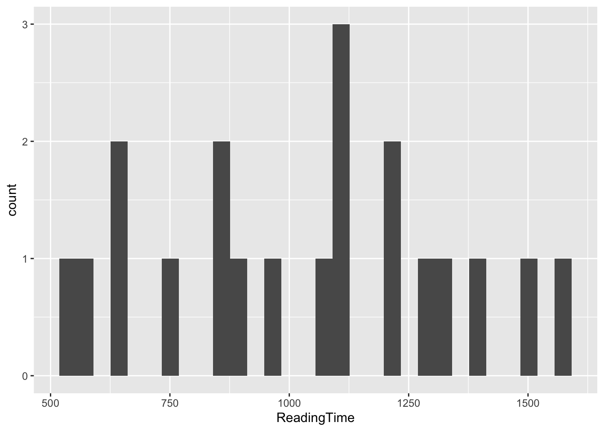
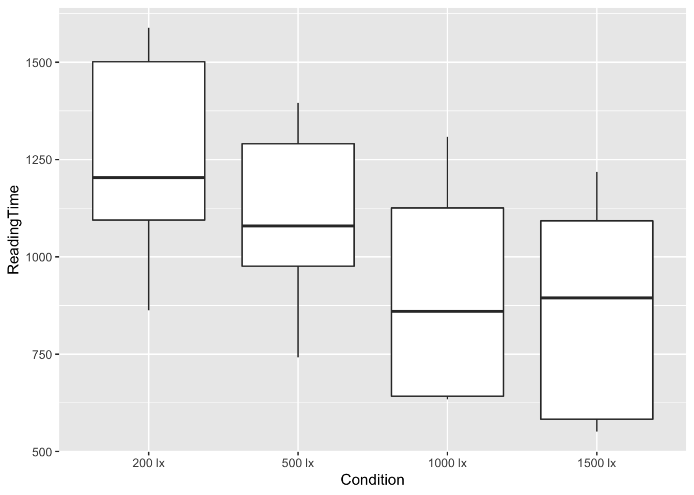

hw1_key
Descriptives
describe(hw)## vars n mean sd median trimmed mad min max range
## Condition* 1 20 2.5 1.15 2.50 2.50 1.48 1.00 4.00 3.0
## ReadingTime 2 20 1032.2 307.44 1085.92 1026.23 330.37 551.34 1588.64 1037.3
## skew kurtosis se
## Condition* 0.00 -1.52 0.26
## ReadingTime 0.02 -1.18 68.75describeBy(hw, group = hw$Condition, mat = T)## item group1 vars n mean sd median trimmed mad
## Condition*1 1 200 lx 1 5 1.000 0.0000 1.00 1.000 0.0000
## Condition*2 2 500 lx 1 5 2.000 0.0000 2.00 2.000 0.0000
## Condition*3 3 1000 lx 1 5 3.000 0.0000 3.00 3.000 0.0000
## Condition*4 4 1500 lx 1 5 4.000 0.0000 4.00 4.000 0.0000
## ReadingTime1 5 200 lx 2 5 1250.188 297.5312 1203.72 1250.188 441.1328
## ReadingTime2 6 500 lx 2 5 1096.594 258.7198 1079.31 1096.594 313.1696
## ReadingTime3 7 1000 lx 2 5 914.006 298.1410 860.09 914.006 335.1121
## ReadingTime4 8 1500 lx 2 5 868.010 298.1114 894.61 868.010 461.9485
## min max range skew kurtosis se
## Condition*1 1.00 1.00 0.00 NaN NaN 0.0000
## Condition*2 2.00 2.00 0.00 NaN NaN 0.0000
## Condition*3 3.00 3.00 0.00 NaN NaN 0.0000
## Condition*4 4.00 4.00 0.00 NaN NaN 0.0000
## ReadingTime1 862.69 1588.64 725.95 -0.05659134 -1.973234 133.0600
## ReadingTime2 741.65 1395.44 653.79 -0.14425109 -1.862845 115.7030
## ReadingTime3 634.06 1308.35 674.29 0.21555948 -2.042828 133.3327
## ReadingTime4 551.34 1218.54 667.20 -0.00372255 -2.131657 133.3195ggplot(hw, aes(x = ReadingTime)) +
geom_histogram()## `stat_bin()` using `bins = 30`. Pick better value with `binwidth`.
ggplot(hw, aes(x = Condition, y = ReadingTime)) +
geom_boxplot()
levene_test(hw, ReadingTime ~ Condition, center = "mean")## # A tibble: 1 x 4
## df1 df2 statistic p
## <int> <int> <dbl> <dbl>
## 1 3 16 0.132 0.939ANOVA
needs(powerAnalysis)
anova <- anova_test(data = hw, formula = ReadingTime ~ Condition,
effect.size = "pes", detailed = TRUE, type = 3)
anova
m1 <- hw %>%
group_by(Condition) %>%
summarise_at(vars(ReadingTime),
list(name = mean)) %>%
select(name)
m1
power.anova.test(groups = 4, n = 20, between.var = bg, within.var = wg, sig.level = .05)
needs(pingouin)
effectsize::cohens_f(anova)
cohens_f(car::Anova(ReadingTime ~ Condition, hw))
cohens_f(car::Anova(fit, type = 3))
etasq <- 462967.7/(21308716.2+1332877+462967.7)
f = EtaSQ / (1-EtaSQ)
pwr.f2.test(u = 4, v = 16, f = f, sig.level = .05)
pwr.anova.test(k = 4, n = 5, f = f, sig.level = .05)
fit <- lm(ReadingTime ~ Condition, hw)
anova(fit)
wg<- anova(fit)["Residuals", "Mean Sq"]
bg <- anova(fit)["Condition", "Mean Sq"]
bgm1 <- lm(ReadingTime ~ Condition, hw)
means <- emmeans(m1, ~ Condition)
means
contrasts <- list(
hyp1 = c(1, -.33, -.33, -.34),
hyp2 = c(1, -1, 0, 0),
hyp3 = c(0, 1, -1, 0),
hyp4 = c(0, 0, 1, -1)
)
contrast(means, contrasts, adjust = "bonferroni")
effectsize::t_to_eta2(
t = c(0.0681),
df_error = 16
)